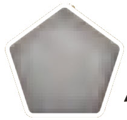
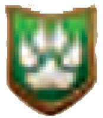
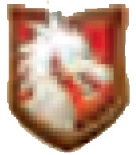
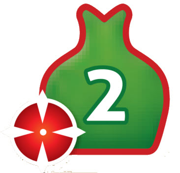

Overview
During a round, you’ll collect essences and then do 1 action each turn, until everyone passes. The goal is to have the most points, 10 or more, when victory is checked.
Components with Collect abilities provide essences at the start of each round.
Many components have 1 or more powers. Powers have both a cost and an effect. Many costs include turning that component; once a component is turned, its powers, except for certain “React” powers, cannot be used.
At the end of each round, victory is checked. If no player has won, components are straightened and play continues with a new round.
Setup
-
Put the 8 magic items, tray of essences, and 5x essence chips in the center to form the supply.
-
Next to them, set out the 5 Places of Power. First Game: use their sides. Later games: for each Place of Power, randomly select which side to use.
-
Shuffle the monuments. Set out 2 of them face up and form a draw pile with the rest.
-
Give 1 of each essence (including Gold) to each player, to form their initial essence pools.
-
Select a First Player, who takes the First Player token.
-
Shuffle the mages and artifacts separately. Deal 2 mages and 8 artifacts to each player. Return the others to the box. Each player examines their cards. Tip: Do you have dragons, creatures, or ways to make gold? This may suggest Places of Power that will work well for you or if you can buy several monuments. After examining their cards, each player shuffles their artifacts to form their deck, offering it to an opponent to cut, and then draws 3 artifacts as their initial hand. Each player then selects 1 Mage. Reveal them. Return unused mages to the box. First Game: instead, give each player a preset 3-card hand, labeled 1 / 2 / 3 / 4 in their lower right corners, and the matching mage. Deal 5 artifacts face down (unseen) to form each player's deck.
-
In counter-clockwise (reverse) order, starting with the player to the right of the First Player, each player chooses 1 magic item. Begin play with the First Player.
Play
A game typically lasts 4-6 rounds. In each round, do these steps:
1. Collect- do any Collect abilities, and
- may take essences from components.
- place an artifact,
- claim a monument or Place of Power,
- discard a card for 1 Gold or any 2 other essences,
- use a power on a straightened component, or
- pass: exchange magic items and draw 1 card. Continue until all players have passed.
a. if you are first to pass, take the First Player token, b. swap your magic item for a different magic item, c. draw 1 card.
3. Victory (10+ VPs)If no one has won:
- straighten all turned components, and
- begin the next round.
The essences supplied are not a limit. As needed, put an essence on a "5x" essence chip to be 5 essences of that color. You may make change at any time.
Some components (e.g. Cursed Forge) list a Collect cost and an effect which occurs if this cost is not paid. These may be resolved after taking other essences.
Two artifacts, the Vault and Windup Man, produce effects if you choose to leave all their essences on them. See Component Fine Points for details.
You may take all the essences from a Place of Power (but doing so will result in a loss of victory points).
Players usually collect their essences simultaneously, but may request that this step be done in player order, clockwise, starting with the First Player.
Draft Variants For 2-4 PlayersThis variant replaces setup step 6.
After players receive their 2 mages, deal 4 artifacts to each player. Each player keeps 1 artifact and passes the other cards to the left (clockwise). Repeat this keep-1-and-pass-the-rest until there are no more artifacts to pass.
Then, deal 4 more artifacts to each player. Each player keeps 1 of these artifacts and passes the others to the right (counter-clockwise). Repeat this keep-1-and-pass-the-rest until there are no more artifacts to pass.
Each player should have 8 artifacts. After examining them, shuffle them to form your initial deck, offer it to an opponent to cut, and draw your initial hand of 3 artifacts.
Then, choose mages and magic items normally. Begin play.
Match Play for 2This adds a face up draft in the middle of a 3 game match.
Play game 1 using the standard setup rules.
After game 1, players retain their mages and place all 16 artifacts from game 1 face up between them. Do setup steps 1-4. The loser of game 1 chooses who will be First Player for game 2. The First Player chooses 1 from the face up artifacts. Players then alternate choosing 2 artifacts until only 1 artifact is left for the First Player, who takes it.
Shuffle your deck for your opponent to cut. Draw your initial hand before choosing magic items. Begin game 2.
After game 2, if you are tied with 1 win apiece, play game 3. Do setup steps 1-4 normally, with each player keeping their mage and the artifacts they drafted after game 1.
The loser of game 2 chooses who is First Player for game 3. Shuffle your deck for your opponent to cut and draw your initial hand. Then, choose magic items and begin play.
1. CollectEach player does their Collect abilities and/or takes essences from their components (in any order).
A component is an artifact, mage, magic item, monument, or Place of Power.
For each Collect ability on your components, take from the supply the essences shown and add them to your essence pool:
- If an essence has a number, take that number of that essence from the supply; otherwise, take 1.
- If "+"s separate the essences, take all of them.
- If "/"s separate the essences, choose 1 of them.
- If a number of [grey pentagon] is listed, choose any mix of essences that equal that number, subject to any restrictions after this symbol, such as (icons): no Gold or Death.
Players may also take any essences on their components during this step.
You may take essences off some components and not others, but if you take any essences off a given component, you must take all of them.
Fine PointsThe essences supplied are not a limit. As needed, put an essence on a "5x" essence chip to be 5 essences of that color. You may make change at any time.
Some components (e.g. Cursed Forge) list a Collect cost and an effect which occurs if this cost is not paid. These may be resolved after taking other essences.
Two artifacts, the Vault and Windup Man, produce effects if you choose to leave all their essences on them. See Component Fine Points for details.
You may take all the essences from a Place of Power (but doing so will result in a loss of victory points).
Players usually collect their essences simultaneously, but may request that this step be done in player order, clockwise, starting with the First Player.
2. ActionsStarting with the First Player and continuing clockwise, each player does 1 action until all players have passed. A player who passes cannot do an action later in this step.
Actions:
- Place an artifact from your hand in front of you, paying its cost.
- Claim a monument or Place of Power from the center, placing it in front of you and paying its cost.
As all monuments cost 4 Gold, you may claim either one of the two monuments on display or the top card of the monument deck. If you claim a monument on display, replace it with the top card from the monument deck (if possible).
Once claimed, a monument or Place of Power can not be taken by another player. The supply of monuments and Places of Power is limited.
- Discard an artifact from your hand to gain 1 Gold or any 2 other essences (either the same or different).
Tuck a discarded artifact sideways, face up, under your artifact deck (to distinguish your discards from your turned artifacts). Your discards may be inspected by other players at any time.
Tip: Do not try to place all of your artifacts. Instead, discard some of them to gain the essences needed to place the others.
- Use a power on one of your straightened components. Powers on turned components cannot be used (except some React powers).
A component is an artifact, mage, magic item, monument, or Place of Power.
- Pass, ending your actions for this round.
A component's placement cost is shown in its upper left corner. Pay the essences shown to the supply.
If an essence has a number, pay that number of that essence to the supply; otherwise, pay 1.
If the essence is [pentagon icon], pay any essence. If it lists a number, such as [pentagon icon with 3], pay any mix of essences equal to that number.
Some artifacts are also Dragons ([dragon icon]), Creatures ([creature icon]), or both (the Sea Serpent). Some discounts reduce the cost to place any artifacts, while others only reduce the cost to place Dragons.
All placed or claimed components begin play straightened.
Fine PointsTwo artifacts (Magical Shard, Prism) have a cost of "0"; they may be placed for free (as an action).
Tip: As artifacts can instead be discarded from hand for essences, there is still an implicit cost to place them.
Discount abilities that reduce a placement cost (Artificer, Dragon Bridle, Dragon Lair) are cumulative with each other and possibly a power (Crypt, Dragon Egg, Sorcerer's Bestiary) being used to place a component. If a cost is reduced below 0, it becomes 0.
Powers
Many components list 1 or 2 powers. Powers have a cost and an effect, separated by a triangle.
Turn this component + pay 1 Life > Take 1 Elan + 1 Death
To use a power, pay its cost (putting any essences spent in the supply) and apply its effect (taking any essences gained from the supply).
A power's cost often consists of several parts, separated by "+"s. You must pay all of its cost to use a power.
A power may require turning its component sideways as part (or all) of its cost. Once a component is turned, unlike abilities, you may not use its powers (except some React powers) until it is straightened.
A power whose cost does not involve turning its component can be used multiple times in a round, but each use of that power is a separate action.
Many effects direct you to put the gained essences on the component, instead of in your essence pool, to be collected on a future round or to become victory points on Places of Power.
React to IgnoreA React power is used out of turn, in response to its condition occurring. Using one is not an action. A React power, unlike other powers, can be used if its component is turned sideways, unless its cost involves turning the component (as then the power's cost cannot be paid).
Life LossSome effects inflict Life loss on rivals, except those who have passed. Each rival must lose the indicated number of Life essences from their pool. For each Life essence a rival does not have, they must instead, if possible, lose any 2 other essences in their pool (including Gold).
Many React powers enable a player to ignore a given Life loss effect. Many powers that inflict Life loss (e.g. Dragons) provide each rival with an immediate React power which, if its cost is paid, enables that rival to ignore the Life loss.
Fine PointsSome effects provide a number of essences. Choose any mix of essences equal to that number, subject to any restrictions, such as (...); no Gold or Life.
Some powers involve discarding or destroying your artifacts. Discarding is from hand, whereas destroy is to discard from play. Put the card in your discard pile (tucked sideways under your deck). If there are essences on the destroyed card, return them to the supply. A turned artifact can be destroyed (by another component's power).
Additional Power Rules
Some effects direct you to draw a card. If you have no cards in your deck and you need to draw, reshuffle your discards to form a new deck.
Some effects (Divination, Hawk, Oracle) direct you to draw 3 cards from a deck. If there are fewer than 3 cards in that deck (after reshuffling, if it is your artifact deck), draw them all, and then replace/discard that number of cards.
Some effects (e.g. Chalice of Fire, Reanimate, Witch) enable you to straighten a turned component, making its powers available again. The Druid can straighten only Creature artifacts.
Some powers (e.g. Athanor, Philosopher's Stone, Prism) have costs that include some number of essences that must be the same. Their effects convert them all to the same number of a different essence, such as Gold.
Some effects direct your rivals to gain essences from the supply. Rivals who have passed do gain these essences.
Some effects (e.g. Hypnotic Basin, Treant) gain essences equal to the number of essences of a rival. You may choose any opponent – including one who has passed – for this effect. Count only the essences in that player's essence pool. Those essences are not removed.
Some effects (e.g. Corrupt Altar, Fiery Whip, Sacrificial Dagger, Sacrificial Pit) produce a mix of essences based on an artifact's placement cost. Total the number of essences in the cost, adjust this by any modifier, and then take this number of essences from the supply, in any mix (subject to any listed restrictions). The essences you take need not include any essences listed in that artifact's cost.
PassingA player who cannot or does not wish to do an action must pass.
If you are the first to pass in a round, take the First Player token – worth 1 point when checking victory – and flip it over to its Passed side.
Swap your magic item for a different one in the supply, flipping the new magic item over to its Passed side.
Then, draw 1 card (if possible). If you have no cards in your deck, reshuffle your discards to form a new deck.
Once a player passes, that player cannot do more actions that round and ignores all Life loss, but can still gain essences from rivals' powers.
Component Fine Points
See also Powers, Fine Points.
MagesArtificer: this discount applies only to artifacts, not Places of Power or Monuments.
Transmuter: some of the non-gold essences you take can be the same as those you turn in. If you have fewer than 2 essences in your pool, you may not use this power.
ArtifactsAthanán: this artifact has two powers. The first is used to build Elan on it (which may be taken during the Collect step if desired). The second requires turning in 6 Elan from this artifact to convert any number of some essence, all the same, into that number of Gold.
Corrupt Altar: its second power may be used to destroy the Corrupt Altar itself.
Crypt: the artifact being placed by its second power must be in your discard pile. If the artifact's placement cost is Gold and 1 other essence, reduce its cost to the Gold.
Fiery Whip: its second power can not be used on itself.
Guard Dog: its first power (to straighten itself) can be used when the Guard Dog is turned (unlike most powers).
Mermaid: its power is to place 1 Calm, Life, or Gold essence from its owner's pool on one of their components. (Typically, this is used to place an essence on a Place of Power that scores for it.)
Sacrificial Dagger: its second power requires both destroying this artifact and discarding a card from hand.
Windup Man: its Collect ability increases the number of essences on this artifact (for a future round), provided its owner takes no essences from it during the Collect step.
Vault: its Collect ability gains its owner any 2 non-Gold essences ("interest"), if there is 1 or more Gold on the Vault that its owner does not take.
Magic ItemsTransmutation: some of the essences you take may be the same as those you turn in. You must have at last 3 essences in your essence pool to use this power.
MonumentsGolden Statue: the points provided by this React power are temporary, lasting until the end of this victory check.
Places of PowerCursed Forge: during the Collect step, either pay 1 Death (the curse) or turn this Place of Power.
Dragon's Lair: this power requires turning both this component and a Dragon.
Sacred Grove: this power requires turning both this component and a Creature.
Sorcerer's Bestiary: this Place of Power scores 3 points for the Sea Serpent (which is both a Dragon and Creature).
Glossary
Ability: a Collect effect, placement discount, or victory formula on a component that automatically applies (when appropriate) whether or not that component is turned.
Component: an artifact, mage, magic item, monument, or Place of Power.
Creature: a type of artifact.
Destroy: to discard an artifact from play, not from hand. Destroyed artifacts are placed in your discard pile.
Discount: a reduction in the number of essences needed to place a given component. Placement discounts cannot reduce a cost below zero.
Dragon: a type of artifact.
Essence: Calm, Death, Elan, Gold, or Life.
Essence Pool: essences a player has, not on components, that they can spend to pay costs.
Life Loss: a rival's effect which requires you to either use a React power to ignore it or pay the indicated number of Life. For each Life you cannot pay, you must lose 2 other essences from your pool (if possible). Players who have passed ignore Life loss.
Mage: a component that begins in play. A mage is not an artifact and cannot be destroyed.
Magic item: a component type taken from the supply during setup and swapped when passing.
Monument: a component type claimed from the center. A monument is not an artifact and cannot be destroyed.
Passed: a player who has passed cannot do further actions that round and ignores all Life loss, but still gains any essences provided by rivals' powers.
Place of Power: a component type claimed from the center. A Place of Power is not an artifact and cannot be destroyed.
Placement Cost: the cost in essences to place an artifact or claim a monument or Place of Power.
Power: a cost and an effect on a component. Except for React powers, using a power requires its component be straightened (not yet turned sideways), takes an action, and involves paying its cost and applying its effect.
React Power: a power that may be used out of turn if its condition occurs. A React on a turned component may be used if its cost does not involve turning that component.
Rivals: your opponents (not you).
Straighten: to turn a sideways component straight, ready to be used again.
Turn: to turn a component sideways, usually as part of a power's cost.
Res Arcana Rules — Icon Reference
| Icon | Name | Description |
|---|---|---|
 |
Any Mix Of Essence | This symbol allows players to choose any combination of essences to satisfy a cost or gain a specified number. This icon refers to one essence, if it has a number it is referring to that number of essences. |
| Collect | This phase begins each round, allowing players to gather essences from their components and the central supply. | |
 |
Creature | This icon represents a specific type of artifact component that can be placed or claimed during gameplay. |
 |
Dragon | This icon represents a specific type of artifact component that often provides placement discounts or unique abilities. |
| Identical Essences | This requirement forces players to spend multiple essences of the exact same type to activate a power. | |
 |
Life Loss | Each targetted rival (except those who have passed) must lose the indicated number of Life essences from their pool. For each Life essence they don't have, they lose any 2 other essences. |
| On The Component | This action places essences directly onto a component for future collection or scoring instead of adding them to your pool. If preceded by 'Destroy' it means destroy this artifact. | |
| Straighten Any Component | This effect resets a turned component to its upright position, restoring its usable powers for future actions. | |
| Turning | This action rotates a component sideways as a cost, temporarily disabling its powers until it is straightened. |
No sections match your search.